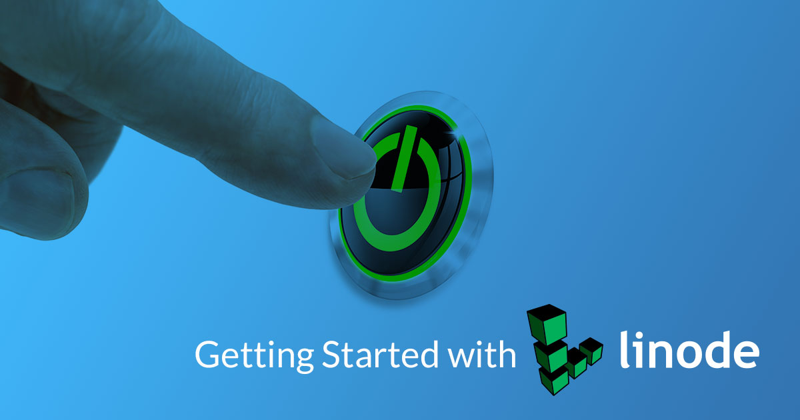
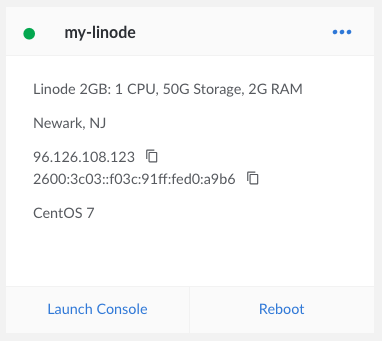
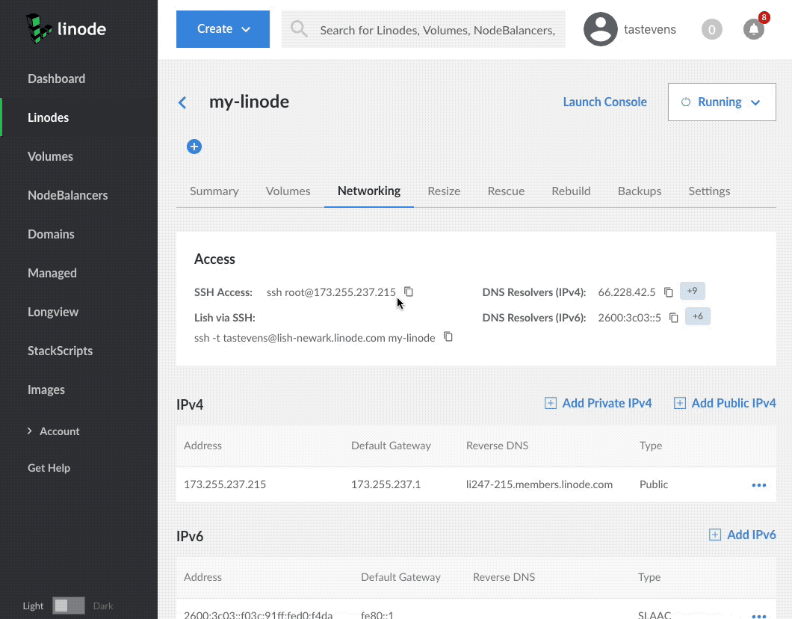

Getting Started with Linode
Updated by Linode Written by Linode

Welcome to Linode!
Thank you for choosing Linode as your cloud hosting provider! This guide will help you sign up for an account and access Linode’s Cloud Manager, a browser-based control panel which allows you to manage your Linode virtual servers and services.
From there you’ll set up a Linux distribution, boot your Linode, and perform some basic system administration tasks. If you’ve already created an account and booted your Linode, skip ahead to connecting to your Linode using SSH.
Sign Up
If you haven’t already signed up for a Linode account, start here.
Create a new account at the Sign Up page.
Sign in and enter your billing and account information. Most accounts are activated instantly, but some require manual review prior to activation. If your account is not immediately activated, you will receive an email with additional instructions.
Create a Linode

Log in to the Cloud Manager with the username and password you created when signing up.
At the top of the page, click Create and select Linode.
Select the image you would like to use. You can choose a standard Linux image from the list or you can select a previously created image from the Images menu item.
Note
Use a StackScript to quickly deploy software platforms and system configuration options to your Linux distribution. Some of the most popular StackScripts do things like install a LAMP stack, VPN, or WordPress.Choose the region where you would like your Linode to reside. If you’re not sure which to select, see our How to Choose a Data Center guide. You can also generate MTR reports for a deeper look at the route path between you and a data center in each specific region.
Select a Linode plan.
Give your Linode a label. This is a name to help you easily identify it within the Cloud Manager’s Dashboard. If desired, assign a tag to the Linode in the Add Tags field.
Create a root password for your Linode in the Root Password field. This password must be provided when you log in to your Linode via SSH. It must be at least 6 characters long and contain characters from two of the following categories:
- lowercase and uppercase case letters
- numbers
- punctuation characters
Click Create. You will be directed back to the Linodes page which will report the status of your Linode as it boots up. You can now use the Cloud Manager to:
- Boot and shut down your Linode
- Access monitoring statistics
- Update your billing and account information
- Add additional Linode services, like Block Storage
- Open a support ticket and perform other administrative tasks
Be sure to bookmark the Linode Status page or subscribe to our system status updates by email.
Connect to Your Linode via SSH
Communicating with your Linode is usually done using the secure shell (SSH) protocol. SSH encrypts all of the data transferred between the client application on your computer and the Linode, including passwords and other sensitive information. There are SSH clients available for every operating system.
- Linux: You can use a terminal window, regardless of desktop environment or window manager.
- macOS: Terminal.app comes pre-installed and can be launched from Spotlight or Launchpad.
- Windows: There is no native SSH client but you can use a free and open source application called PuTTY.
Find your Linode’s IP Address
Your Linode has a unique IP address that identifies it to other devices and users on the internet.
Click the Linodes menu item in the Cloud Manager’s left hand navigation.
Find your Linode, click on it’s name and navigate to Networking.
Your IPv4 and IPv6 addresses appear under the IPv4 and IPv6 sections.
You can also quickly reference your Linode’s IP addresses from the Linodes page:

{kind=link}
Log in Using SSH
Once you have the IP address and an SSH client, you can log in via SSH. The following instructions are written for Linux and macOS. If you’re using PuTTY on Windows, follow these instructions.

Enter the following into your terminal window or application. Replace the example IP address with your Linode’s IP address:
ssh root@198.51.100.4If this is the first time connecting to your Linode, you’ll see the authenticity warning below. This is because your SSH client has never encountered the server’s key fingerprint before. Type
yesand press Enter to continue connecting.The authenticity of host '198.51.100.4 (198.51.100.4)' can't be established. RSA key fingerprint is 11:eb:57:f3:a5:c3:e0:77:47:c4:15:3a:3c:df:6c:d2. Are you sure you want to continue connecting (yes/no)?After you enter
yes, the client confirms the addition:Warning: Permanently added '198.51.100.4' (RSA) to the list of known hosts.The login prompt appears for you to enter the password you created for the
rootuser above.root@198.51.100.4's password:The SSH client initiates the connection and then the following prompt appears:
root@li123-456:~#Note
If you recently rebuilt an existing Linode, you might receive an error message when you try to reconnect via SSH. SSH clients try to match the remote host with the known keys on your desktop computer, so when you rebuild your Linode, the remote host key changes.
To reconnect via SSH, revoke the key for that IP address.
For Linux and macOS:
ssh-keygen -R 198.51.100.4For Windows, PuTTY users must remove the old host IP addresses manually. PuTTY’s known hosts are in the registry entry:
HKEY_CURRENT_USER\Software\SimonTatham\PuTTY\SshHostKeys
Install Software Updates
The first thing you should do after connecting to your Linode is update the Linux distribution’s packages. This applies the latest security patches and bug fixes to help protect your Linode against unauthorized access. Installing software updates should be performed regularly.
Arch Linux
pacman -Syu
CentOS
yum update
Debian / Ubuntu
apt-get update && apt-get upgrade
NoteYou may be prompted to make a menu selection when the Grub package is updated on Ubuntu. If prompted, selectkeep the local version currently installed.
Fedora
dnf upgrade
Gentoo
emaint sync -a
After running a sync, it may end with a message that you should upgrade Portage using a --oneshot emerge command. If so, run the Portage update. Then update the rest of the system:
emerge --uDN @world
OpenSUSE
zypper update
Slackware
slackpkg update
slackpkg upgrade-all
Set the Hostname
A hostname is used to identify your Linode using an easy-to-remember name. Your Linode’s hostname doesn’t necessarily associate with websites or email services hosted on the system, but see our guide on using the hosts file if you want to assign your Linode a fully qualified domain name.
Your hostname should be something unique, and should not be www or anything too generic. Some people name their servers after planets, philosophers, or animals. After you’ve made the change below, you’ll need to log out and back in again to see the terminal prompt change from localhost to your new hostname. The command hostname should also show it correctly.
Arch / CentOS 7 / Debian 8 / Fedora / Ubuntu 16.04 and above
Replace example_hostname with one of your choice.
hostnamectl set-hostname example_hostname
CentOS 6
Replace hostname with one of your choice.
echo "HOSTNAME=example_hostname" >> /etc/sysconfig/network
hostname "hostname"
Debian 7 / Slackware / Ubuntu 14.04
Replace example_hostname with one of your choice.
echo "example_hostname" > /etc/hostname
hostname -F /etc/hostname
Gentoo
Enter the following commands to set the hostname, replacing example_hostname with the hostname of your choice:
echo "HOSTNAME=\"example_hostname\"" > /etc/conf.d/hostname
/etc/init.d/hostname restart
OpenSUSE
Replace example-hostname with one of your choice.
hostname example-hostname
Update Your System’s hosts File
The hosts file creates static associations between IP addresses and hostnames or domains which the system prioritizes before DNS for name resolution. Open this file in a text editor and add a line for your Linode’s public IP address. You can associate this address with your Linode’s Fully Qualified Domain Name (FQDN) if you have one, and with the local hostname you set in the steps above. In the example below, 203.0.113.10 is the public IP address, hostname is the local hostname, and hostname.example.com is the FQDN.
- /etc/hosts
-
1 2127.0.0.1 localhost.localdomain localhost 203.0.113.10 hostname.example.com hostname
You may also want to add an entry for your Linode’s IPv6 address:
- /etc/hosts
-
1 2 3127.0.0.1 localhost.localdomain localhost 203.0.113.10 hostname.example.com hostname 2600:3c01::a123:b456:c789:d012 hostname.example.com hostname
The value you assign as your system’s FQDN should have an “A” record in DNS pointing to your Linode’s IPv4 address. For IPv6, you should also set up a DNS “AAAA” record pointing to your Linode’s IPv6 address.
See our guide to Adding DNS Records for more information on configuring DNS. For more information about the hosts file, see Using your System’s hosts File
Set the Timezone
All new Linodes will be set to UTC time by default. However, you may prefer your Linode use the time zone which you live in so log file timestamps are relative to your local time.
Arch Linux / CentOS 7 / Fedora
View all available time zones:
timedatectl list-timezonesUse the
Up,Down,Page UpandPage Downkeys to navigate. Copy the time zone you want as a mouse selection. Then press q to exit the list.Set the time zone (for example,
America/New_York):timedatectl set-timezone 'America/New_York'
Debian / Ubuntu
Though newer versions of Debian and Ubuntu use systemd with
timedatectl, the recommended method to change timezones for these distributions is to usetzdata. It can be called usingdpkg:dpkg-reconfigure tzdataArrow up or down to the continent of your choice and press Enter. Then do the same for the region.
Gentoo
View a list of available time zones:
ls /usr/share/zoneinfoWrite the selected time zone to
/etc/timezone(for example, EST for Eastern Standard Time):echo "EST" > /etc/timezoneConfigure the
sys-libs/timezone-datapackage, which will set/etc/localtimeappropriately:emerge --config sys-libs/timezone-data
OpenSUSE
View a list of available time zones:
yast2 timezoneArrow up or down to the Region of your choice and press Enter.
Press Option+Z (on a macOS) or ALT+Z (on Windows/Linux) to select the Time Zone.
Use arrow up or down to move through the list of time zones. Press Enter to make your selection.
Press F10 when done.
Slackware
Call the
timeconfigtool in a terminal:timeconfigSelect
NO Hardware clock is set to local time.Select a timezone.
Check the Time
Use the date command to view the current date and time according to your server.
root@localhost:~# date
Thu Feb 16 12:17:52 EST 2018
Next Steps
Now that you’ve learned the basics of using the Cloud Manager and working with your Linode, secure it and your Linode account from unauthorized access. See the following guides to begin:
Join our Community
Find answers, ask questions, and help others.
The Linode Classic ManagerIf you're using the Linode Classic Manager instead of the new Cloud Manager, you can still view the Classic Manager version of this Getting Started with Linode guide.
This guide is published under a CC BY-ND 4.0 license.